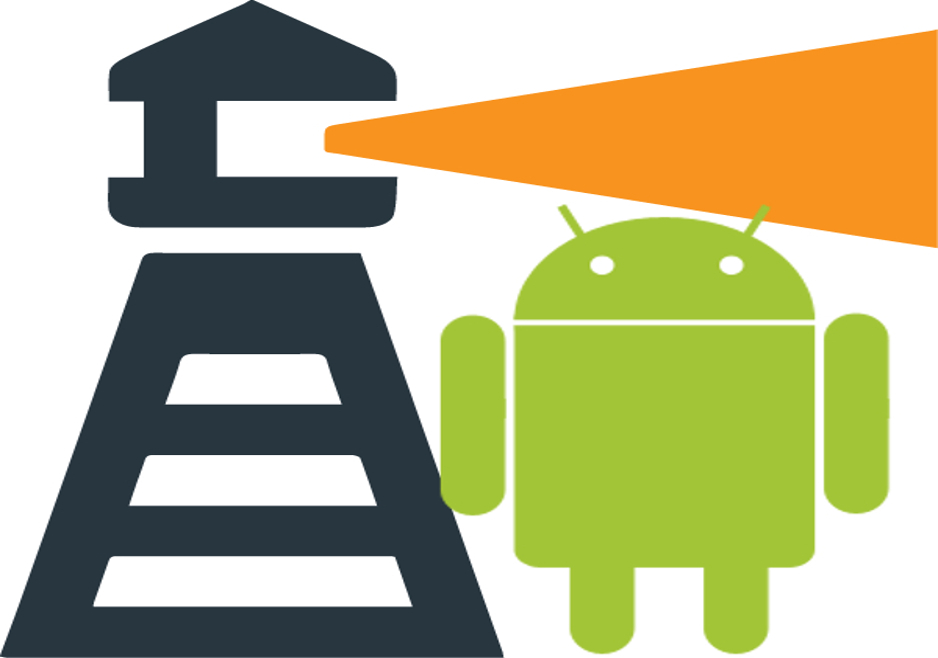

I'm a Computer Science graduate from University of Florida. I'm interested in technologies that interact with people on a personal level. My goal is to develop technology that caters to strengthening the community. I love music, technology and Batman,
University of Florida, USA
2 Years Course
University of Mumbai, India
4 Years Course
Dr. Kyla McMullen & Dr. Juan Gilbert,
Computer & Information Science & Engineering, University of Florida
Infosys Limited
Freelance
JAVA/C++
SCALA/GO
MATLAB
HTML/CSS/PHP
LINUX
BCI-DRUMS
MINDTRACK
MUSENSE

BEACON TUNER
SCALA PROJECTS
Facebook API with end-to-end encryption in Scala that could handle about 100 requests/sec
Sensor Grid Networking Simulation using Gossip/Push-Sum algorithm emulating over 1700 actors
Bitcoin Mining: Akka actor implementation in Scala capable to mine bitcoins with a trailing desired pattern of up to 6 characters
UX Portfolio